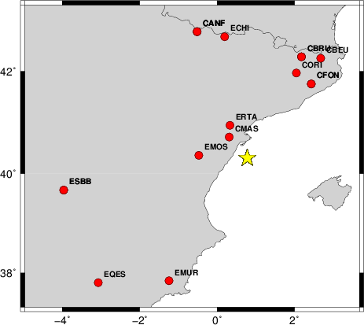
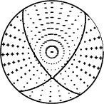
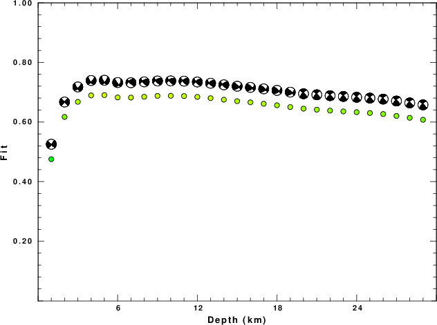
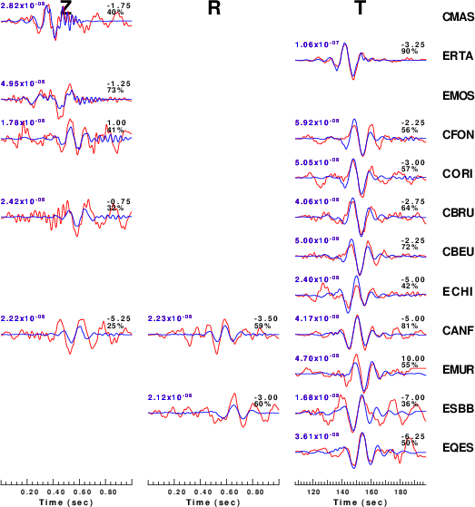
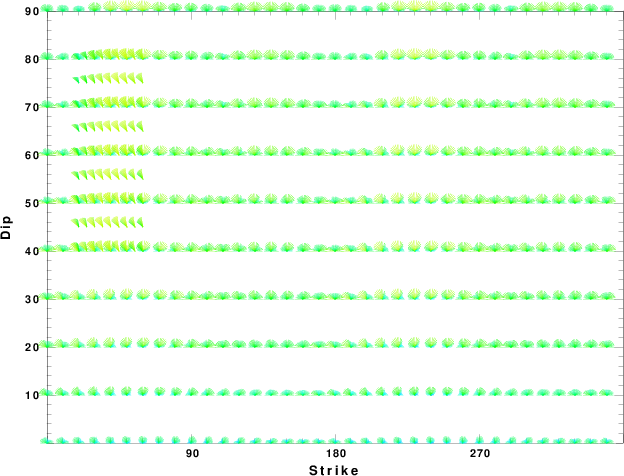
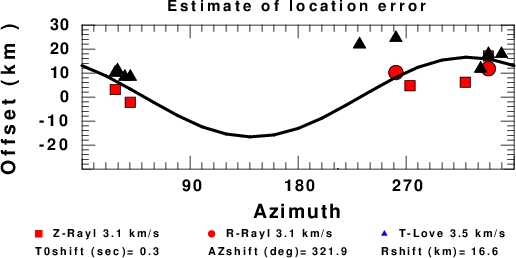

2013/09/29 21:23:16 40.313000 0.780000 2.300000 3.2 CASTOR
SLU Moment Tensor Solution
ENS 2013/09/29 21:23:16:1 40.31 0.78 2.3 3.2 CASTOR
Stations used:
CA.CBEU CA.CBRU CA.CFON CA.CMAS CA.CORI ES.ECHI ES.EMOS
ES.EMUR ES.EQES ES.ERTA ES.ESBB LC.CANF
Filtering commands used:
cut o DIST/3.3 -30 o DIST/3.3 +60
rtr
taper w 0.1
hp c 0.03 n 3
lp c 0.08 n 3
Best Fitting Double Couple
Mo = 5.82e+20 dyne-cm
Mw = 3.11
Z = 5 km
Plane Strike Dip Rake
NP1 146 64 -146
NP2 40 60 -30
Principal Axes:
Axis Value Plunge Azimuth
T 5.82e+20 3 272
N 0.00e+00 49 179
P -5.82e+20 41 5
Moment Tensor: (dyne-cm)
Component Value
Mxx -3.26e+20
Mxy -4.83e+19
Mxz -2.87e+20
Myy 5.78e+20
Myz -5.05e+19
Mzz -2.52e+20
--------------
----------------------
##-------------------------#
###----------- ------------#
#####----------- P -----------####
#######---------- -----------#####
########------------------------######
##########----------------------########
##########----------------------########
##########--------------------##########
T ###########------------------###########
############----------------############
###############-------------##############
###############-----------##############
#################-------################
#################-----################
####################################
###############----###############
##########---------###########
###------------------#######
----------------------
--------------
Global CMT Convention Moment Tensor:
R T P
-2.52e+20 -2.87e+20 5.05e+19
-2.87e+20 -3.26e+20 4.83e+19
5.05e+19 4.83e+19 5.78e+20
Details of the solution is found at
http://www.eas.slu.edu/eqc/eqc_mt/MECH.NA/20130929212316/index.html
|
STK = 40
DIP = 60
RAKE = -30
MW = 3.11
HS = 5.0
The waveform inversion is preferred.
The following compares this source inversion to others
SLU Moment Tensor Solution
ENS 2013/09/29 21:23:16:1 40.31 0.78 2.3 3.2 CASTOR
Stations used:
CA.CBEU CA.CBRU CA.CFON CA.CMAS CA.CORI ES.ECHI ES.EMOS
ES.EMUR ES.EQES ES.ERTA ES.ESBB LC.CANF
Filtering commands used:
cut o DIST/3.3 -30 o DIST/3.3 +60
rtr
taper w 0.1
hp c 0.03 n 3
lp c 0.08 n 3
Best Fitting Double Couple
Mo = 5.82e+20 dyne-cm
Mw = 3.11
Z = 5 km
Plane Strike Dip Rake
NP1 146 64 -146
NP2 40 60 -30
Principal Axes:
Axis Value Plunge Azimuth
T 5.82e+20 3 272
N 0.00e+00 49 179
P -5.82e+20 41 5
Moment Tensor: (dyne-cm)
Component Value
Mxx -3.26e+20
Mxy -4.83e+19
Mxz -2.87e+20
Myy 5.78e+20
Myz -5.05e+19
Mzz -2.52e+20
--------------
----------------------
##-------------------------#
###----------- ------------#
#####----------- P -----------####
#######---------- -----------#####
########------------------------######
##########----------------------########
##########----------------------########
##########--------------------##########
T ###########------------------###########
############----------------############
###############-------------##############
###############-----------##############
#################-------################
#################-----################
####################################
###############----###############
##########---------###########
###------------------#######
----------------------
--------------
Global CMT Convention Moment Tensor:
R T P
-2.52e+20 -2.87e+20 5.05e+19
-2.87e+20 -3.26e+20 4.83e+19
5.05e+19 4.83e+19 5.78e+20
Details of the solution is found at
http://www.eas.slu.edu/eqc/eqc_mt/MECH.NA/20130929212316/index.html
|
The focal mechanism was determined using broadband seismic waveforms. The location of the event and the and stations used for the waveform inversion are shown in the next figure.
|  |
|
|
The program wvfgrd96 was used with good traces observed at short distance to determine the focal mechanism, depth and seismic moment. This technique requires a high quality signal and well determined velocity model for the Green functions. To the extent that these are the quality data, this type of mechanism should be preferred over the radiation pattern technique which requires the separate step of defining the pressure and tension quadrants and the correct strike.
The observed and predicted traces are filtered using the following gsac commands:
cut o DIST/3.3 -30 o DIST/3.3 +60 rtr taper w 0.1 hp c 0.03 n 3 lp c 0.08 n 3The results of this grid search from 0.5 to 19 km depth are as follow:
DEPTH STK DIP RAKE MW FIT
WVFGRD96 1.0 40 85 -5 2.88 0.4754
WVFGRD96 2.0 45 90 0 2.96 0.6171
WVFGRD96 3.0 45 70 -25 3.03 0.6677
WVFGRD96 4.0 45 70 -25 3.06 0.6892
WVFGRD96 5.0 40 60 -30 3.11 0.6902
WVFGRD96 6.0 40 45 -20 3.15 0.6824
WVFGRD96 7.0 235 45 20 3.16 0.6819
WVFGRD96 8.0 240 60 25 3.13 0.6847
WVFGRD96 9.0 240 60 25 3.15 0.6877
WVFGRD96 10.0 240 60 25 3.16 0.6880
WVFGRD96 11.0 235 65 20 3.16 0.6871
WVFGRD96 12.0 235 65 20 3.17 0.6843
WVFGRD96 13.0 235 65 20 3.19 0.6801
WVFGRD96 14.0 235 65 20 3.20 0.6749
WVFGRD96 15.0 55 55 20 3.23 0.6700
WVFGRD96 16.0 55 55 20 3.24 0.6661
WVFGRD96 17.0 55 55 20 3.26 0.6612
WVFGRD96 18.0 55 55 20 3.27 0.6562
WVFGRD96 19.0 55 55 20 3.28 0.6503
WVFGRD96 20.0 315 80 20 3.29 0.6448
WVFGRD96 21.0 315 80 20 3.30 0.6414
WVFGRD96 22.0 315 80 15 3.31 0.6383
WVFGRD96 23.0 315 80 15 3.33 0.6358
WVFGRD96 24.0 315 80 15 3.34 0.6331
WVFGRD96 25.0 315 80 15 3.36 0.6302
WVFGRD96 26.0 315 80 20 3.38 0.6268
WVFGRD96 27.0 315 80 20 3.40 0.6205
WVFGRD96 28.0 315 80 20 3.41 0.6141
WVFGRD96 29.0 315 80 20 3.42 0.6076
The best solution is
WVFGRD96 5.0 40 60 -30 3.11 0.6902
The mechanism correspond to the best fit is
|  |
|
|
The best fit as a function of depth is given in the following figure:
|  |
|
|
The comparison of the observed and predicted waveforms is given in the next figure. The red traces are the observed and the blue are the predicted. Each observed-predicted component is plotted to the same scale and peak amplitudes are indicated by the numbers to the left of each trace. A pair of numbers is given in black at the right of each predicted traces. The upper number it the time shift required for maximum correlation between the observed and predicted traces. This time shift is required because the synthetics are not computed at exactly the same distance as the observed and because the velocity model used in the predictions may not be perfect. A positive time shift indicates that the prediction is too fast and should be delayed to match the observed trace (shift to the right in this figure). A negative value indicates that the prediction is too slow. The lower number gives the percentage of variance reduction to characterize the individual goodness of fit (100% indicates a perfect fit).
The bandpass filter used in the processing and for the display was
cut o DIST/3.3 -30 o DIST/3.3 +60 rtr taper w 0.1 hp c 0.03 n 3 lp c 0.08 n 3
|  |
|
|
|  |
| Focal mechanism sensitivity at the preferred depth. The red color indicates a very good fit to thewavefroms. Each solution is plotted as a vector at a given value of strike and dip with the angle of the vector representing the rake angle, measured, with respect to the upward vertical (N) in the figure. |
A check on the assumed source location is possible by looking at the time shifts between the observed and predicted traces. The time shifts for waveform matching arise for several reasons:
Time_shift = A + B cos Azimuth + C Sin Azimuth
The time shifts for this inversion lead to the next figure:

The derived shift in origin time and epicentral coordinates are given at the bottom of the figure.
The VALEN used for the waveform synthetic seismograms and for the surface wave eigenfunctions and dispersion is as follows:
MODEL.01
JOINT96 simplified to fit dispersion
ISOTROPIC
KGS
SPHERICAL EARTH
1-D
CONSTANT VELOCITY
LINE08
LINE09
LINE10
LINE11
H(KM) VP(KM/S) VS(KM/S) RHO(GM/CC) QP QS ETAP ETAS FREFP FREFS
2.0000 3.5371 1.9732 2.2372 330 150 0.00 0.00 1.00 1.00
2.0000 5.3762 2.9986 2.5736 330 150 0.00 0.00 1.00 1.00
8.0000 6.1136 3.4099 2.7346 330 150 0.00 0.00 1.00 1.00
2.0000 6.2754 3.5003 2.7815 450 200 0.00 0.00 1.00 1.00
12.0000 6.5318 3.6430 2.8580 450 200 0.00 0.00 1.00 1.00
12.0000 7.3482 4.0985 3.0938 450 200 0.00 0.00 1.00 1.00
8.0000 7.8287 4.3669 3.2530 900 400 0.00 0.00 1.00 1.00
5.0000 7.7376 4.3155 3.2196 900 400 0.00 0.00 1.00 1.00
20.0000 7.8014 4.3535 3.2390 900 400 0.00 0.00 1.00 1.00
15.0000 7.9706 4.4507 3.2972 900 400 0.00 0.00 1.00 1.00
0.0000 8.0665 4.5045 3.3330 2250 1000 0.00 0.00 1.00 1.00
Here we tabulate the reasons for not using certain digital data sets
The following stations did not have a valid response files: